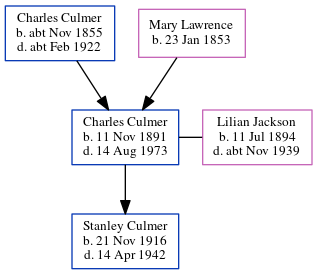

Nellie Louisa Ferguson (née Culmer) 1892 -
[ Home ] | [ Calendar ] | [ Surnames Index ] | [ Errors ] | [ Family History ]The child of Charles Culmer (a coal dealer) and Mary Lawrence, Nellie Culmer, the second cousin twice-removed on the mother's side of Nigel Horne, was born in Faversham, Kent, England on 21 Dec 18921,2,3, was baptised there at St Mary of Charity Church, Church Road on 22 Jan 1893 went to Gordon Road School, Strood, Kent, England She married Allan Ferguson (a shunter petroleum refinery with whom she had 1 child, Henry G) at St Nicholas in Strood on 7 Aug 19164.
During her life, she was living at 19 Cecil Avenue in Strood on 31 Mar 19011 - less than a mile from her brother Albert Thomas who was living at 22 Station Road, Frindsbury, Kent; at The Cottage, London Road, Leigh On Sea, Essex, England on 2 Apr 19115; and at 15 Billet Road, Thurrock, Essex on 29 Sept 19392 (when she was living with her) - less than a mile from her mother Mary Lawrence who was living at 15 Billet Road, Thurrock, Essex.
Parents
- Charles was born c. Nov 1855
- Mary Ann was born on 23 Jan 1853
Children
- Henry G was born on 31 May 1923
Citations
- 1901 England, Wales & Scotland Census - Findmypast (was age 8 and the daughter of the head of the household)
- 1939 Register - Findmypast (was the wife of the head of the household)
- England & Wales births 1837-2006 - Findmypast
- England & Wales Marriages 1837-2005 - Findmypast
- 1911 Census for England & Wales - Findmypast (was age 18 and a servant in the household)
Media
National School Admission Registers & Log-books 1870-1914 Transcription - GBOR-SCHOOL-AD-10375649
England & Wales births 1837-2006 - BMD/B/1893/1/AZ/000140/109
Kent, Canterbury Archdeaconry Baptisms Transcription - GBPRS-CANT-B-96262702
England & Wales marriages 1837-2005 - BMD/M/1916/3/AZ/000218/141
1911 England, Wales & Scotland Census Transcription - GBC-1911-RG14-10115-0077-4
1939 Register - TNA/R39/1551/1551G/003/10
England Births & Baptisms 1538-1975 - R_885854575
Kent marriages and banns - PRS/MEDWAY/MAR/0068821/2
Family Tree
Map
Generated by ged2site. Last updated on Jul 3, 2024